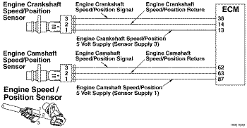
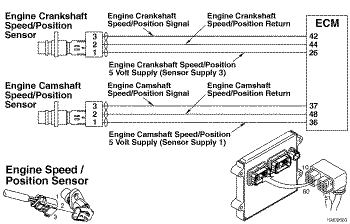
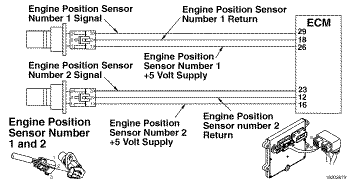

Código de Falha 2321
|
| CÓDIGO | RAZÃO | EFEITO |
| Código de Falha: 2321 PID: P190 SPN: 190 FMI: 2/2 LÂMPADA: Nenhuma SRT: |
Rotação/Posição da Árvore de Manivelas - Dados Inválidos, Intermitentes ou Incorretos. Sincronização intermitente do sensor da rotação do motor na árvore de manivelas. |
O motor pode apresentar falha de ignição à medida que o controle muda do sensor primário de rotação para o de reserva. A potência do motor é reduzida enquanto o motor funciona com o sensor da rotação de reserva. |
|
 ISF2.8 CM2220 E/ISF2.8 CM2220 AN/ISF3.8 CM2220/ISF3.8 CM2220 AN - Circuito do Sensor de Rotação/Posição da Árvore de Manivelas
|
|
 ISB4.5, ISB6.7, ISD4.5, e ISD6.7 CM2150 SN/ISL8.9 CM2150 SN/ISZ13 CM2150 - Circuito do Sensor de Rotação/Posição da Árvore de Manivelas do Motor
|
|
 ISM11 CM876 SN - Circuito do Sensor de Rotação/Posição da Árvore de Manivelas do Motor
|
O módulo eletrônico de controle (ECM) fornece uma alimentação de 5 volts para o sensor de rotação/posição da árvore de manivelas no circuito de alimentação do sensor. O ECM fornece também um massa no circuito de retorno do sensor. O sensor de rotação/posição da árvore de manivelas envia um sinal para o ECM pelo circuito de sinal do sensor. Este sensor gera um sinal para o ECM quando o anel indicador de rotação da árvore de manivelas passa pelo sensor. O ECM converte esse em um valor de rotação do motor e determina a posição do motor com base no dente ausente no anel indicador de rotação.
Não se aplica
O diagnóstico é executado continuamente enquanto o motor funciona.
O ECM detecta um sinal intermitente ou degradado enviado pelo sensor de rotação/posição da árvore de manivelas em um intervalo prolongado de operação do motor.
O ECM apagará a luz âmbar de verificação do motor (CHECK ENGINE) e o status do código de falha se tornará inativo assim que o sinal degradado enviado pelo sensor de rotação/posição da árvore de manivelas não estiver mais presente e o diagnóstico for executado com êxito.
Durante a operação do motor, o ECM monitora o sinal do sensor primário de rotação (sensor da rotação da árvore de manivelas). O Código de Falha 689 se tornará ativo e a luz amarela acenderá se o sinal do sensor primário de rotação não estiver presente ou for degradado por mais de 3 segundos contínuos. Enquanto isso, se o sinal do sensor primário de rotação do motor não estiver presente ou for degradado por alguns instantes (menos de 3 segundos), o ECM interromperá os eventos de injeção com base no sensor primário de rotação do motor e retomará os eventos de injeção utilizando o sensor da rotação de reserva. A potência do motor será reduzida enquanto os eventos de injeção forem baseados no sensor da rotação de reserva. Se o sinal do sensor primário de rotação do motor retornar, o ECM interromperá automaticamente os eventos de injeção com base no sensor da rotação de reserva e retomará os eventos de injeção com base no sensor primário de rotação. Se ao longo de um determinado período, o ECM detectar vários incidentes de perda do sinal do sensor primário de rotação, este código de falha se tornará ativo.
O operador do veículo pode perceber uma 'falha de ignição' intermitente se os eventos de injeção forem interrompidos enquanto o ECM muda do controle baseado no sensor primário para o sensor secundário de rotação. Além disso, o operador poderá perceber uma 'perda de potência' intermitente se um 'erro' no sinal do sensor primário de rotação fizer o motor utilizar intermitentemente o sensor da rotação de reserva para o controle de injeção.
Este código de falha torna-se ativo sempre que o ECM detecta uma perda persistente do sinal do sensor primário de rotação do motor durante um curto período.
Este código de falha torna-se inativo quando a chave de ignição é ligada ou se o ECM não detectar uma perda do sinal do sensor primário de rotação do motor durante pelo menos 20 minutos.
Ações a serem tomadas se esta falha for intermitente: